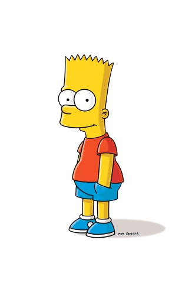
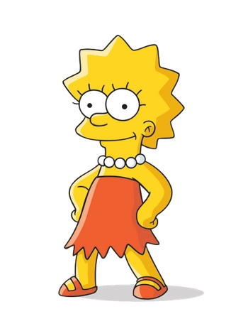

The Simpsons is an American animated sitcom created by Matt Groening for the Fox Broadcasting Company. The series is a satirical depiction of American life, epitomized by the Simpson family, which consists of Homer, Marge, Bart, Lisa, and Maggie. The show is set in the fictional town of Springfield and parodies American culture and society, television, and the human condition. The family was conceived by Groening shortly before a solicitation for a series of animated shorts with producer James L. Brooks. He created a dysfunctional family and named the characters after his own family members, substituting Bart for his own name; he thought Simpson was a funny name in that it sounded similar to "simpleton". The shorts became a part of The Tracey Ullman Show on April 19, 1987. After three seasons, the sketch was developed into a half-hour prime time show and became Fox's first series to land in the Top 30 ratings in a season (1989–1990).
Homer Jay Simpson (born May 12, 1956)[36] is the main protagonist of The Simpsons series (or show). He is the spouse of Marge Simpson and father of Bart, Lisa and Maggie Simpson. Homer is overweight (said to be ~240 pounds), lazy, and often ignorant to the world around him. Although Homer has many flaws, he has shown to have great caring, love, and even bravery to those he cares about and, sometimes, even others he doesn't. He also serves as the main protagonist of the The Simpsons Movie. His favorite color is blue and he enjoys dancing, eating donuts, drinking, hugging, driving a sit-down arcade racer, playing the piano and horse riding. His favorite kiddie rides are "Stuart Little", "Barney Train" and "Ride the Champion Mechanical Horse".
Bartholomew "Bart" Jojo Simpson (born April 1[7] or February 23[8]) is the mischievous, rebellious, misunderstood, disruptive and "potentially dangerous" oldest child of the Simpson family in The Simpsons. He is the only son of Homer and Marge Simpson, and the older brother of Lisa and Maggie. He also has been nicknamed "Cosmo", after discovering a comet in "Bart's Comet". Bart has also been on the cover on numerous comics, such as "Critical Hit", "Simpsons Treasure Trove #11", and "Winter Wingding". Bart also has a 100-issue comic series entitled the Simpson Comics Presents Bart Simpson. Bart is loosely based on Matt Groening and his older brother, Mark Groening.
Lisa Marie Simpson (born May 9)[9] is the elder daughter and middle child of the Simpson family and one of the two tritagonists (along with Marge,) of The Simpsons series. In "Homer and Lisa Exchange Cross Words" she is also known as Lisa Bouvier. She was named after a train called Lil' Lisa on her parents' 1st anniversary. She is a charismatic 8-year-old girl, who exceeds the standard achievement of the intelligence level of children her age. Not to everyone's surprise, she is also the moral center of her family. In her upbringing, Lisa lacks parental involvement of Homer and Marge, which leads to hobbies such as playing saxophone and guitar, riding and caring for horses, and interest in advanced studies. In school, Lisa's popularity is affected by those who view her as a geeky overachiever, which leaves her with only a few friends. She focuses on her goals and strives to reach her potential, and at the age of eight, she is already a member of Mensa with an IQ of 159. Her lack of parental involvement also leads to her lashing out to those who she deems lower than her or even above her. She has extreme jealously from time to time and will do whatever it takes to reclaim her title as the smartest; but only if she deems it necessary. Otherwise, she's the intelligent one who usually thinks things through.
